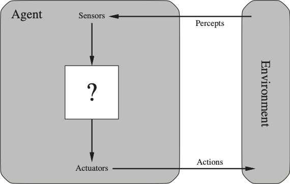
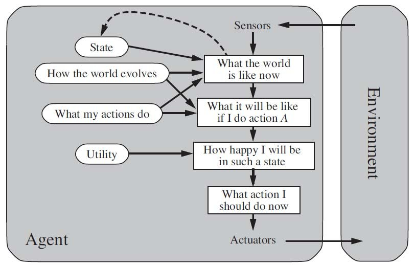
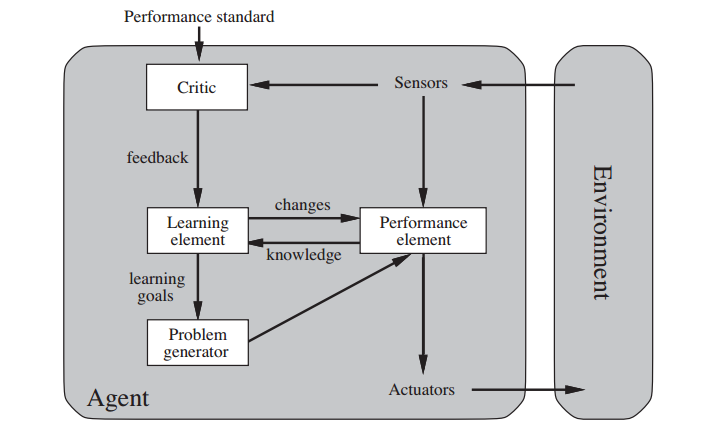

Agent-Environment Interface#
An agent is a computer system that is situated in some environment, and that is capable of autonomous action in this environment in order to meet its design objectives.
In general sensor data are converted via the agent function (that is implemented via a program) into actions as shown below.
 General Agent-Environment Interface
The two most important agent architectures that we will deal with in this course are the utility and learning-based agents architectures. To start with we recognize that most of the problems we will face as agent designers are for agents operating in environments that are:
Partially Observed (PO). This means that we cant see all the variables that constitute the state and we need to maintain an internal belief of the state variables that we cant perceive.
Stochastic. This means that the environment state is affected by random events and can not be determined by the previous state and the actions of the agent (which in this case we are talking about deterministic environments). Such probabilistic characterization of the environment state is the norm in many settings such as as robotics, self-driving cars etc.
Sequential As compared to episodic, in sequential environments actions now can have long term effects into the future.
Dynamic In this setting, the environment state changes all the time, even while the agent is taking the action based on the sequence of percepts up to this point in time. In most settings the environments we deal will not be static.
Continuous When the variables that constitute the environment state are defined in continuous domains. Time is usually considered a special variable and we may have environments where the time variable is discrete while other variables are continuous.
Known This refers to the knowledge of the agent rather than the environment. In most instances we are dealing with environments where there is a set of known rules that govern the state transition. In driving for example, we know what steering does.
Architectures#
Rational Agent Architecture#

In the rational agent architecture we meet three key concepts:
The need for the agent to keep internally the environment state (in probabilistic terms a belief). This is needed due to the the partially observed environment the agent is interfacing with.
The presence of a world model that helps the agent to update its belief.
The presence of a utility function that the agent can use to produce the value (happiness) when its action transitions the environment to a new state. Obvious the agent will try to optimize its actions in what we earlier described stochastic environments and therefore it will try to maximize the value (hapiness) on average (strictly in expectation) where the average is taken across the distribution of all possible states across time.
Learning Agent Architecture#

The learning agent architecture builds on top of the rational agent (the performance element in the figure below), additional functions that:
Embeds a learner that learns the various models needed by the rational agent as well as allowing the rational agent to operate on unknown environments. In this respect it learns the world model, some elements of the utility function itself or the desirability of each actions it takes. To enable learning, the rational agent sends training data to the learner.
Introduces a critic that transmits a positive or negative reward to the learner based on its own view of how the agent is doing. The learner can modify these models to make the rational agent perform better in the future.
Introduces the problem generator that can change the problem statement of the rational agent. Obviously the expected utility objective will not change but the utility function itself may in fact change to lead the agent to perform more exploration (increase its risk) in its environment.
We will see in Deep Reinforcement Learning that this architecture is able to accommodate such end to end learning approach. In that setting the critic is part of the environment - see Solving sparse-reward tasks with Curiosity for an example where the critic is inside the agent generating intrinsic rewards.
The architecture of serf-driving cars#
To avoid wondering around the various disconnected use cases, we need to pick a domain that we can use as an application theme. Given the importance of the mission critical industries in the economy of every country, in this course we have selected robotics / self-driving cars. This domain requires the design of advanced agents that perceive the environment using noisy sensors, make decisions under uncertainty, actuate a host of electronics to execute decisions, communicate with humans in natural language or be able to sense driver psychological state and many more.

Examples of AI agents#
Industrial automation
Real Carla self-steering experiment